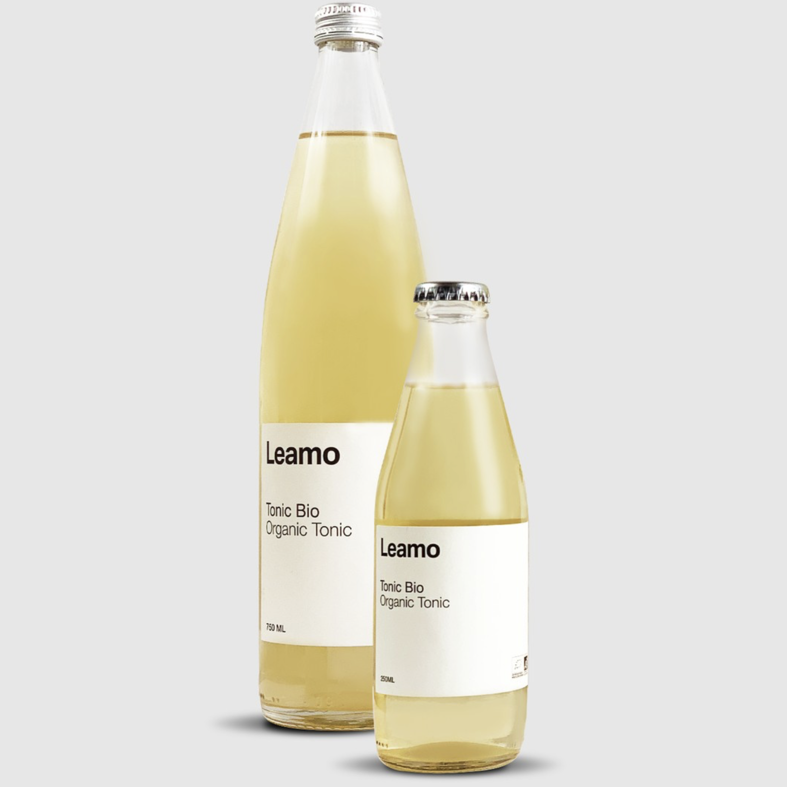
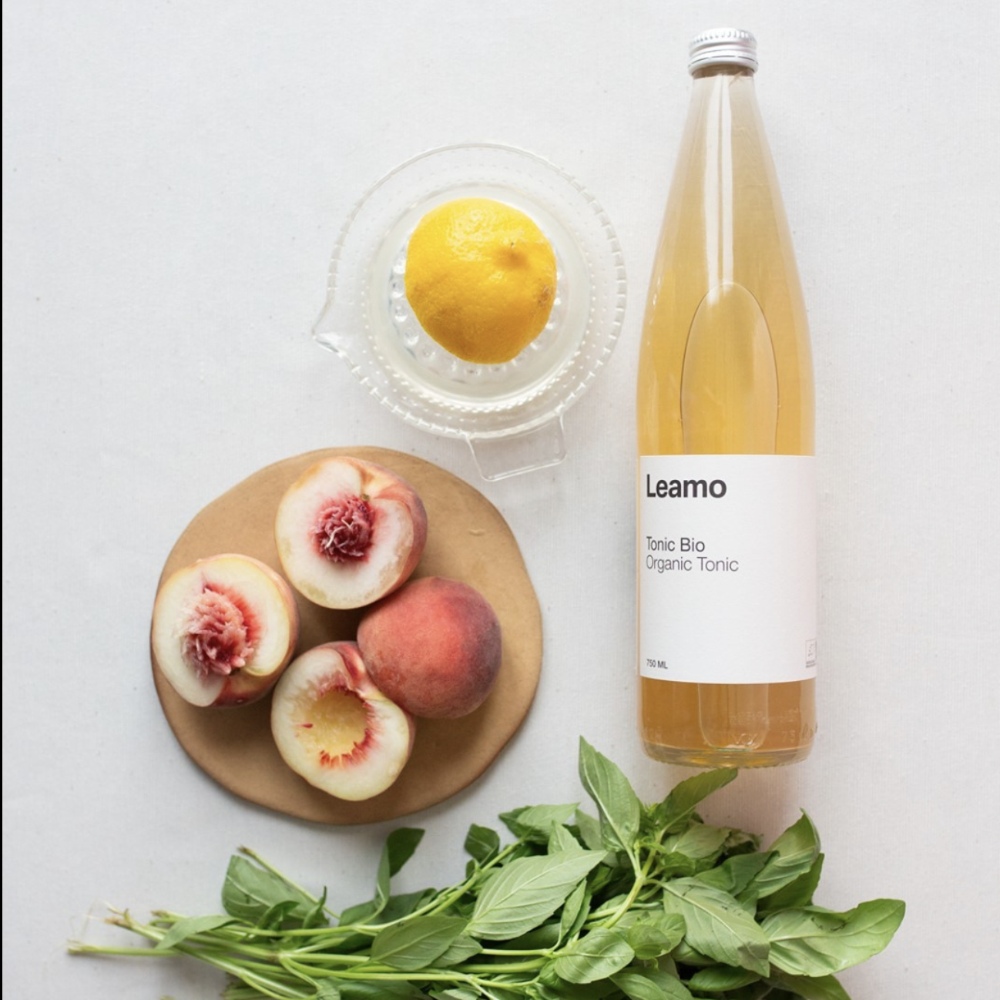
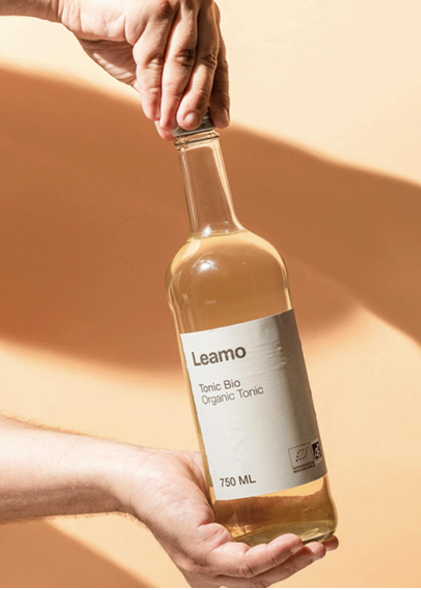
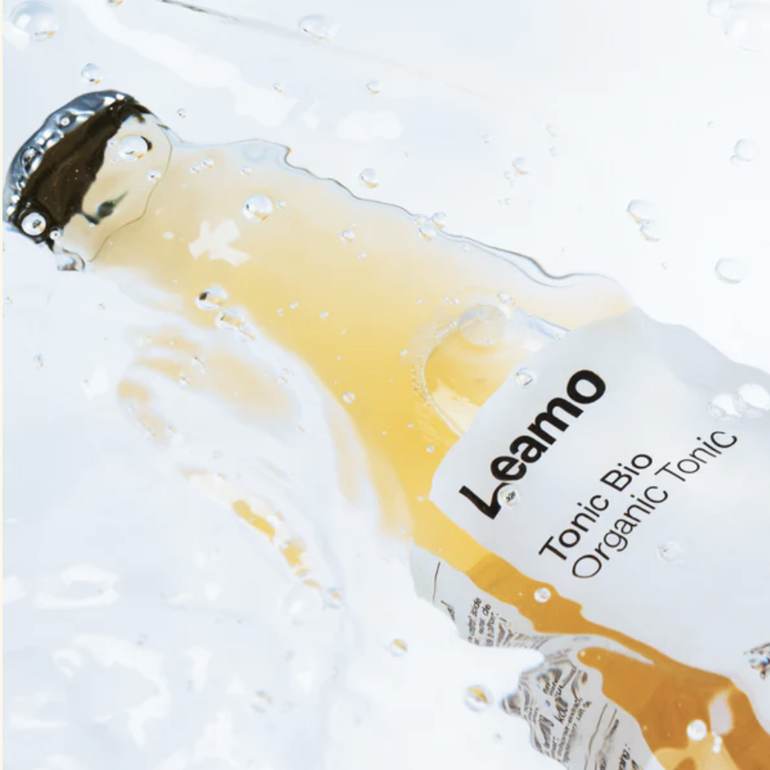

Revenir




Tonic Bio
Le tonic est réalisé à base de quinine avec une note d’armoise.Au goût légèrement relevé et à ses vertus antioxydantes, c’est une boisson saine, savoureuse et rafraîchissante.